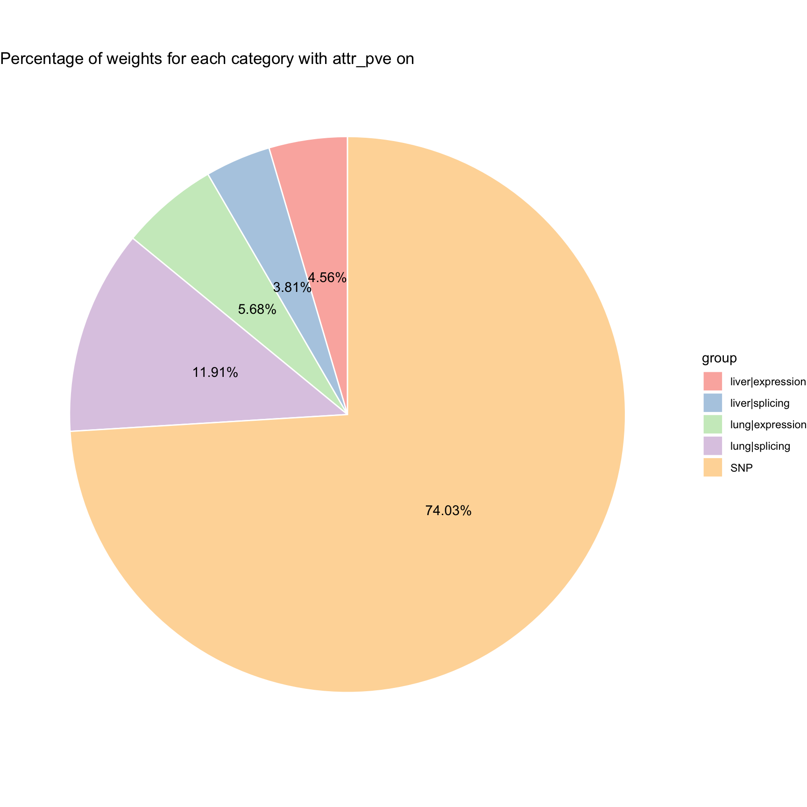
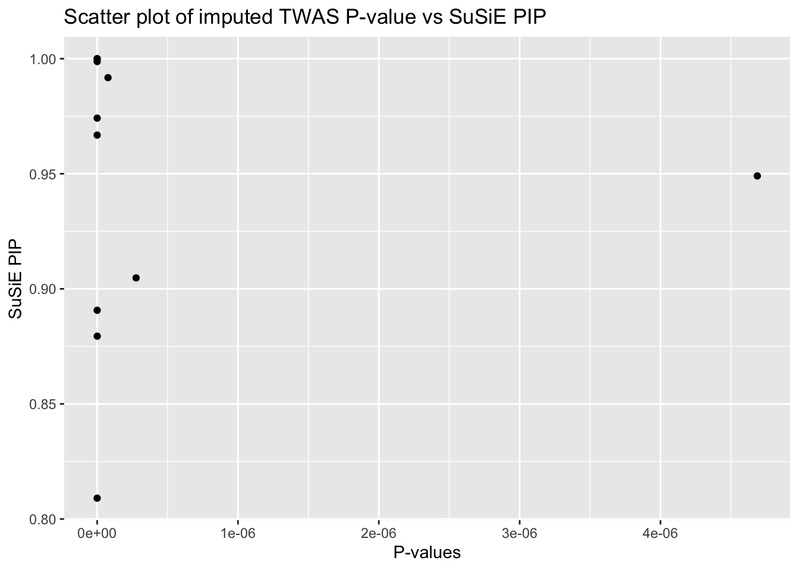

cTWAS-European Lung+Liver//eQTL+sQTL
Nina Yifan Y.
2024-10-04
Last updated: 2024-10-04
Checks: 7 0
Knit directory: Multigroup_cTWAS/
This reproducible R Markdown analysis was created with workflowr (version 1.7.1). The Checks tab describes the reproducibility checks that were applied when the results were created. The Past versions tab lists the development history.
Great! Since the R Markdown file has been committed to the Git repository, you know the exact version of the code that produced these results.
Great job! The global environment was empty. Objects defined in the global environment can affect the analysis in your R Markdown file in unknown ways. For reproduciblity it’s best to always run the code in an empty environment.
The command set.seed(20241004) was run prior to running
the code in the R Markdown file. Setting a seed ensures that any results
that rely on randomness, e.g. subsampling or permutations, are
reproducible.
Great job! Recording the operating system, R version, and package versions is critical for reproducibility.
Nice! There were no cached chunks for this analysis, so you can be confident that you successfully produced the results during this run.
Great job! Using relative paths to the files within your workflowr project makes it easier to run your code on other machines.
Great! You are using Git for version control. Tracking code development and connecting the code version to the results is critical for reproducibility.
The results in this page were generated with repository version 6cba1b3. See the Past versions tab to see a history of the changes made to the R Markdown and HTML files.
Note that you need to be careful to ensure that all relevant files for
the analysis have been committed to Git prior to generating the results
(you can use wflow_publish or
wflow_git_commit). workflowr only checks the R Markdown
file, but you know if there are other scripts or data files that it
depends on. Below is the status of the Git repository when the results
were generated:
Ignored files:
Ignored: .DS_Store
Ignored: .Rhistory
Untracked files:
Untracked: analysis/cTWAS_noLD_european_lymphocytes_output.Rmd
Untracked: analysis/cTWAS_noLD_european_prostatetestis_output.Rmd
Note that any generated files, e.g. HTML, png, CSS, etc., are not included in this status report because it is ok for generated content to have uncommitted changes.
These are the previous versions of the repository in which changes were
made to the R Markdown
(analysis/cTWAS_noLD_european_lungliver_output.Rmd) and
HTML (docs/cTWAS_noLD_european_lungliver_output.html)
files. If you’ve configured a remote Git repository (see
?wflow_git_remote), click on the hyperlinks in the table
below to view the files as they were in that past version.
| File | Version | Author | Date | Message |
|---|---|---|---|---|
| Rmd | 6cba1b3 | yy896 | 2024-10-04 | Add my first analysis |
Introduction
Data Summary
Group Size
| V1 | V2 | V3 | V4 | V5 | |
|---|---|---|---|---|---|
| group | lung|expression | lung|splicing | liver|expression | liver|splicing | SNP |
| group_size | 10630 | 32464 | 8721 | 19025 | 7146350 |
Piechart with att_pve on

Combined PIPs
2024-10-04 17:54:56.53067 INFO::Limit gene results to credible sets| gene_name | lung|expression_pip | lung|splicing_pip | liver|expression_pip | liver|splicing_pip | combined_pip |
|---|---|---|---|---|---|
| BIK | 1.0000000 | NA | NA | NA | 1.0000000 |
| MSMB | 1.0000000 | NA | NA | NA | 1.0000000 |
| MMP7 | 0.6232104 | NA | 0.3764369 | NA | 0.9996473 |
| ZDHHC7 | 0.9987709 | NA | NA | NA | 0.9987709 |
| VAMP5 | NA | 0.9973173 | NA | NA | 0.9973173 |
| MBOAT7 | 0.9917535 | NA | NA | NA | 0.9917535 |
| CCDC88C | NA | 0.6228008 | NA | 0.3589958 | 0.9817966 |
| TBX1 | NA | 0.9741715 | NA | NA | 0.9741715 |
| JADE2 | 0.9668006 | NA | NA | NA | 0.9668006 |
| EIF2D | NA | 0.9666164 | NA | NA | 0.9666164 |
| RNF217 | NA | 0.9490588 | NA | NA | 0.9490588 |
| ARNT2 | 0.9047577 | NA | NA | NA | 0.9047577 |
| TNS3 | NA | 0.8988673 | NA | NA | 0.8988673 |
| ZBTB38 | NA | 0.8982179 | NA | NA | 0.8982179 |
| CHD3 | NA | 0.8970068 | NA | NA | 0.8970068 |
| CASP8 | NA | 0.8906806 | NA | NA | 0.8906806 |
| KLF7 | NA | NA | 0.8794376 | NA | 0.8794376 |
| CHMP4C | 0.1651493 | 0.3567142 | 0.1615086 | 0.1949738 | 0.8783458 |
| ADGRG1 | NA | 0.8615623 | NA | NA | 0.8615623 |
| RPS6KL1 | 0.1577756 | 0.6813823 | 0.0186439 | NA | 0.8578017 |
| PDLIM5 | NA | 0.6749151 | NA | 0.1793973 | 0.8543124 |
| L3MBTL3 | 0.8090425 | NA | NA | NA | 0.8090425 |
Scatter Plot

cTWAS output
make_convergence_plots(param, gwas_n)
ctwas_parameters <- summarize_param(param, gwas_n)
ctwas_parameters$group_size
lung|expression lung|splicing liver|expression liver|splicing
10630 32464 8721 19025
SNP
7146350
$group_prior
lung|expression lung|splicing liver|expression liver|splicing
0.0033233570 0.0064685915 0.0032500941 0.0035356198
SNP
0.0001987342
$group_prior_var
lung|expression lung|splicing liver|expression liver|splicing
47.77963 16.83377 47.77963 16.83377
SNP
15.47738
$enrichment
lung|expression lung|splicing liver|expression liver|splicing
16.72262 32.54895 16.35397 17.79069
$group_pve
lung|expression lung|splicing liver|expression liver|splicing
0.002322317 0.004863640 0.001863260 0.001557901
SNP
0.030242848
$total_pve
[1] 0.04084996
$attributable_pve
lung|expression lung|splicing liver|expression liver|splicing
0.05684990 0.11906105 0.04561227 0.03813715
SNP
0.74033963 Locus plot (from highest PIP to lowest)
make_locusplot(finemap_res,
region_id = "22_42294812_43318194",
ens_db = ens_db,
weights = weights,
highlight_pip = 0.8,
filter_protein_coding_genes = TRUE,
filter_cs = TRUE,
color_pval_by = "cs",
color_pip_by = "cs")2024-10-04 17:54:58.204994 INFO::Limit to protein coding genes
2024-10-04 17:54:58.209426 INFO::focal id: ENSG00000100290.2|lung_expression
2024-10-04 17:54:58.209724 INFO::focal molecular trait: BIK lung expression
2024-10-04 17:54:58.210009 INFO::Range of locus: chr22:42295132-433177622024-10-04 17:54:58.306158 INFO::focal molecular trait QTL positions: 43104206,43110629
2024-10-04 17:54:58.321982 INFO::Limit PIPs to credible sets
make_locusplot(finemap_res,
region_id = "10_44234627_46978910",
ens_db = ens_db,
weights = weights,
highlight_pip = 0.8,
filter_protein_coding_genes = TRUE,
filter_cs = TRUE,
color_pval_by = "cs",
color_pip_by = "cs")2024-10-04 17:54:58.962574 INFO::Limit to protein coding genes
2024-10-04 17:54:58.963225 INFO::focal id: ENSG00000263639.5|lung_expression
2024-10-04 17:54:58.963496 INFO::focal molecular trait: MSMB lung expression
2024-10-04 17:54:58.963782 INFO::Range of locus: chr10:44234762-469107812024-10-04 17:54:59.067773 INFO::focal molecular trait QTL positions: 46046326
2024-10-04 17:54:59.18622 INFO::Limit PIPs to credible sets
make_locusplot(finemap_res,
region_id = "16_84412277_85115079",
ens_db = ens_db,
weights = weights,
highlight_pip = 0.8,
filter_protein_coding_genes = TRUE,
filter_cs = TRUE,
color_pval_by = "cs",
color_pip_by = "cs")2024-10-04 17:54:59.686427 INFO::Limit to protein coding genes
2024-10-04 17:54:59.687003 INFO::focal id: ENSG00000153786.12|lung_expression
2024-10-04 17:54:59.687247 INFO::focal molecular trait: ZDHHC7 lung expression
2024-10-04 17:54:59.687516 INFO::Range of locus: chr16:84412178-851148342024-10-04 17:54:59.734284 INFO::focal molecular trait QTL positions: 84988377,85011068,85011497,85011520
2024-10-04 17:54:59.747603 INFO::Limit PIPs to credible sets
make_locusplot(finemap_res,
region_id = "19_54099074_55216712",
ens_db = ens_db,
weights = weights,
highlight_pip = 0.8,
filter_protein_coding_genes = TRUE,
filter_cs = TRUE,
color_pval_by = "cs",
color_pip_by = "cs")2024-10-04 17:55:00.341906 INFO::Limit to protein coding genes
2024-10-04 17:55:00.342521 INFO::focal id: ENSG00000125505.16|lung_expression
2024-10-04 17:55:00.342782 INFO::focal molecular trait: MBOAT7 lung expression
2024-10-04 17:55:00.343053 INFO::Range of locus: chr19:54098580-552160012024-10-04 17:55:00.403829 INFO::focal molecular trait QTL positions: 54189591,54190017
2024-10-04 17:55:00.41732 INFO::Limit PIPs to credible sets
make_locusplot(finemap_res,
region_id = "22_17813322_19924835",
ens_db = ens_db,
weights = weights,
highlight_pip = 0.8,
filter_protein_coding_genes = TRUE,
filter_cs = TRUE,
color_pval_by = "cs",
color_pip_by = "cs")2024-10-04 17:55:01.338105 INFO::Limit to protein coding genes
2024-10-04 17:55:01.338696 INFO::focal id: intron_22_19761280_19763241|lung_splicing
2024-10-04 17:55:01.33895 INFO::focal molecular trait: TBX1 lung splicing
2024-10-04 17:55:01.339224 INFO::Range of locus: chr22:17813372-199254142024-10-04 17:55:01.391785 INFO::focal molecular trait QTL positions: 19762002
2024-10-04 17:55:01.404594 INFO::Limit PIPs to credible sets
make_locusplot(finemap_res,
region_id = "5_132803957_135441711",
ens_db = ens_db,
weights = weights,
highlight_pip = 0.8,
filter_protein_coding_genes = TRUE,
filter_cs = TRUE,
color_pval_by = "cs",
color_pip_by = "cs")2024-10-04 17:55:02.068753 INFO::Limit to protein coding genes
2024-10-04 17:55:02.069373 INFO::focal id: ENSG00000043143.20|lung_expression
2024-10-04 17:55:02.069651 INFO::focal molecular trait: JADE2 lung expression
2024-10-04 17:55:02.069932 INFO::Range of locus: chr5:132778929-1354414522024-10-04 17:55:02.124436 INFO::focal molecular trait QTL positions: 134524410
2024-10-04 17:55:02.137539 INFO::Limit PIPs to credible sets
make_locusplot(finemap_res,
region_id = "6_123535036_125103237",
ens_db = ens_db,
weights = weights,
highlight_pip = 0.8,
filter_protein_coding_genes = TRUE,
filter_cs = TRUE,
color_pval_by = "cs",
color_pip_by = "cs")2024-10-04 17:55:02.815006 INFO::Limit to protein coding genes
2024-10-04 17:55:02.815573 INFO::focal id: intron_6_124971598_125045211|lung_splicing
2024-10-04 17:55:02.815821 INFO::focal molecular trait: RNF217 lung splicing
2024-10-04 17:55:02.81609 INFO::Range of locus: chr6:123426616-1251030862024-10-04 17:55:02.862383 INFO::focal molecular trait QTL positions: 124972588
2024-10-04 17:55:02.876124 INFO::Limit PIPs to credible sets
make_locusplot(finemap_res,
region_id = "15_78223711_80568637",
ens_db = ens_db,
weights = weights,
highlight_pip = 0.8,
filter_protein_coding_genes = TRUE,
filter_cs = TRUE,
color_pval_by = "cs",
color_pip_by = "cs")2024-10-04 17:55:03.406912 INFO::Limit to protein coding genes
2024-10-04 17:55:03.407553 INFO::focal id: ENSG00000172379.20|lung_expression
2024-10-04 17:55:03.407833 INFO::focal molecular trait: ARNT2 lung expression
2024-10-04 17:55:03.408124 INFO::Range of locus: chr15:78223611-805682402024-10-04 17:55:03.460715 INFO::focal molecular trait QTL positions: 80404427
2024-10-04 17:55:03.473798 INFO::Limit PIPs to credible sets
make_locusplot(finemap_res,
region_id = "2_200711561_201953914",
ens_db = ens_db,
weights = weights,
highlight_pip = 0.8,
filter_protein_coding_genes = TRUE,
filter_cs = TRUE,
color_pval_by = "cs",
color_pip_by = "cs")2024-10-04 17:55:04.149296 INFO::Limit to protein coding genes
2024-10-04 17:55:04.149862 INFO::focal id: intron_2_201260613_201266461|lung_splicing
2024-10-04 17:55:04.1501 INFO::focal molecular trait: CASP8 lung splicing
2024-10-04 17:55:04.150354 INFO::Range of locus: chr2:200711461-2019532692024-10-04 17:55:04.207144 INFO::focal molecular trait QTL positions: 201260274
2024-10-04 17:55:04.220638 INFO::Limit PIPs to credible sets
make_locusplot(finemap_res,
region_id = "2_205870980_207780675",
ens_db = ens_db,
weights = weights,
highlight_pip = 0.8,
filter_protein_coding_genes = TRUE,
filter_cs = TRUE,
color_pval_by = "cs",
color_pip_by = "cs")2024-10-04 17:55:04.90022 INFO::Limit to protein coding genes
2024-10-04 17:55:04.90082 INFO::focal id: ENSG00000118263.14|liver_expression
2024-10-04 17:55:04.901085 INFO::focal molecular trait: KLF7 liver expression
2024-10-04 17:55:04.901383 INFO::Range of locus: chr2:205871698-2077797972024-10-04 17:55:04.955985 INFO::focal molecular trait QTL positions: 207166747
2024-10-04 17:55:04.969448 INFO::Limit PIPs to credible sets
make_locusplot(finemap_res,
region_id = "6_129539886_130614309",
ens_db = ens_db,
weights = weights,
highlight_pip = 0.8,
filter_protein_coding_genes = TRUE,
filter_cs = TRUE,
color_pval_by = "cs",
color_pip_by = "cs")2024-10-04 17:55:05.569609 INFO::Limit to protein coding genes
2024-10-04 17:55:05.570167 INFO::focal id: ENSG00000198945.7|lung_expression
2024-10-04 17:55:05.570414 INFO::focal molecular trait: L3MBTL3 lung expression
2024-10-04 17:55:05.570696 INFO::Range of locus: chr6:129539786-1306137262024-10-04 17:55:05.617674 INFO::focal molecular trait QTL positions: 130027974
2024-10-04 17:55:05.631269 INFO::Limit PIPs to credible sets
sessionInfo()R version 4.4.1 (2024-06-14)
Platform: aarch64-apple-darwin20
Running under: macOS 15.0.1
Matrix products: default
BLAS: /Library/Frameworks/R.framework/Versions/4.4-arm64/Resources/lib/libRblas.0.dylib
LAPACK: /Library/Frameworks/R.framework/Versions/4.4-arm64/Resources/lib/libRlapack.dylib; LAPACK version 3.12.0
locale:
[1] en_US.UTF-8/en_US.UTF-8/en_US.UTF-8/C/en_US.UTF-8/en_US.UTF-8
time zone: America/New_York
tzcode source: internal
attached base packages:
[1] stats4 stats graphics grDevices utils datasets methods
[8] base
other attached packages:
[1] data.table_1.16.0 lubridate_1.9.3
[3] forcats_1.0.0 stringr_1.5.1
[5] dplyr_1.1.4 purrr_1.0.2
[7] tidyr_1.3.1 tibble_3.2.1
[9] tidyverse_2.0.0 ggrepel_0.9.6
[11] ggplot2_3.5.1 EnsDb.Hsapiens.v86_2.99.0
[13] ensembldb_2.28.1 AnnotationFilter_1.28.0
[15] GenomicFeatures_1.56.0 AnnotationDbi_1.66.0
[17] Biobase_2.64.0 GenomicRanges_1.56.1
[19] GenomeInfoDb_1.40.1 IRanges_2.38.1
[21] S4Vectors_0.42.1 BiocGenerics_0.50.0
[23] ctwas_0.4.14 readr_2.1.5
[25] workflowr_1.7.1
loaded via a namespace (and not attached):
[1] RColorBrewer_1.1-3 rstudioapi_0.16.0
[3] jsonlite_1.8.9 magrittr_2.0.3
[5] farver_2.1.2 rmarkdown_2.28
[7] fs_1.6.4 BiocIO_1.14.0
[9] zlibbioc_1.50.0 vctrs_0.6.5
[11] memoise_2.0.1 Rsamtools_2.20.0
[13] RCurl_1.98-1.16 mixsqp_0.3-54
[15] htmltools_0.5.8.1 S4Arrays_1.4.1
[17] curl_5.2.3 SparseArray_1.4.8
[19] sass_0.4.9 bslib_0.8.0
[21] htmlwidgets_1.6.4 plotly_4.10.4
[23] zoo_1.8-12 cachem_1.1.0
[25] gggrid_0.2-0 GenomicAlignments_1.40.0
[27] whisker_0.4.1 lifecycle_1.0.4
[29] pkgconfig_2.0.3 Matrix_1.7-0
[31] R6_2.5.1 fastmap_1.2.0
[33] GenomeInfoDbData_1.2.12 MatrixGenerics_1.16.0
[35] digest_0.6.37 colorspace_2.1-1
[37] ps_1.8.0 rprojroot_2.0.4
[39] irlba_2.3.5.1 RSQLite_2.3.7
[41] labeling_0.4.3 pgenlibr_0.3.7
[43] timechange_0.3.0 fansi_1.0.6
[45] httr_1.4.7 abind_1.4-8
[47] compiler_4.4.1 bit64_4.0.5
[49] withr_3.0.1 BiocParallel_1.38.0
[51] DBI_1.2.3 highr_0.11
[53] DelayedArray_0.30.1 rjson_0.2.23
[55] formattable_0.2.1 tools_4.4.1
[57] httpuv_1.6.15 glue_1.7.0
[59] restfulr_0.0.15 callr_3.7.6
[61] promises_1.3.0 grid_4.4.1
[63] getPass_0.2-4 generics_0.1.3
[65] LDlinkR_1.4.0 gtable_0.3.5
[67] tzdb_0.4.0 locuszoomr_0.3.5
[69] hms_1.1.3 utf8_1.2.4
[71] XVector_0.44.0 pillar_1.9.0
[73] later_1.3.2 logging_0.10-108
[75] lattice_0.22-6 rtracklayer_1.64.0
[77] bit_4.5.0 tidyselect_1.2.1
[79] Biostrings_2.72.1 knitr_1.48
[81] git2r_0.33.0.9000 ProtGenerics_1.36.0
[83] SummarizedExperiment_1.34.0 xfun_0.47
[85] matrixStats_1.4.1 stringi_1.8.4
[87] UCSC.utils_1.0.0 lazyeval_0.2.2
[89] yaml_2.3.10 evaluate_1.0.0
[91] codetools_0.2-20 cli_3.6.3
[93] munsell_0.5.1 processx_3.8.4
[95] jquerylib_0.1.4 Rcpp_1.0.13
[97] png_0.1-8 XML_3.99-0.17
[99] parallel_4.4.1 blob_1.2.4
[101] bitops_1.0-8 viridisLite_0.4.2
[103] scales_1.3.0 crayon_1.5.3
[105] rlang_1.1.4 cowplot_1.1.3
[107] KEGGREST_1.44.1